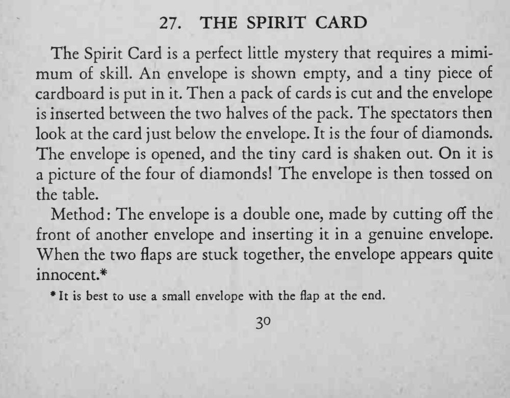
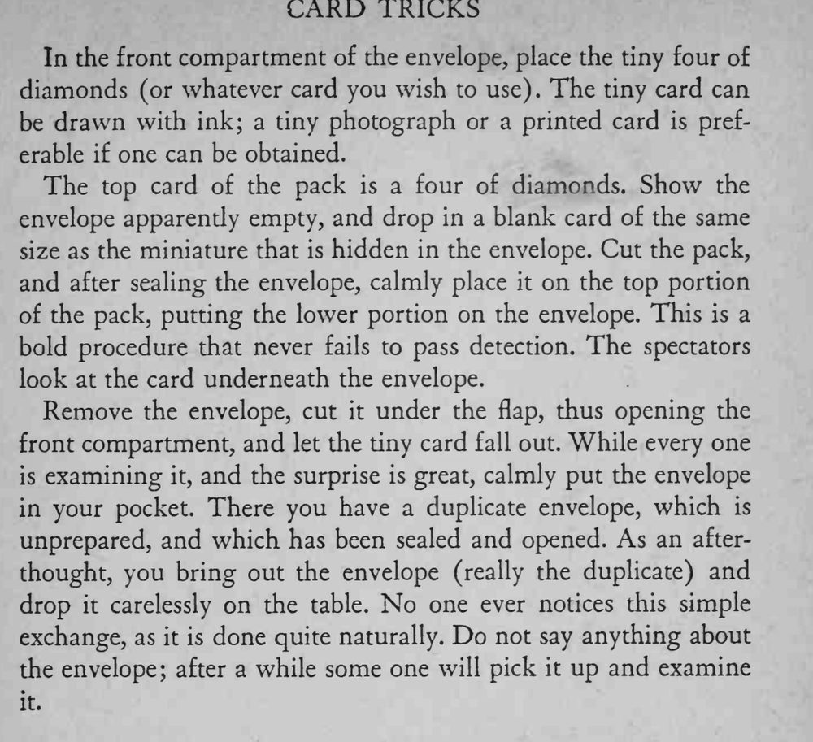

空信封里装进一张小卡片，信封被夹在牌堆中间；观众看到信封下面那张牌是方块 4，随后从信封里倒出的小卡片上画的正是方块 4。
换信封的动作要随意自然，别人拿起来检查也发现不了。


The Spirit Card is a perfect little mystery that requires a mimimum of skill. An envelope is shown empty, and a tiny piece of cardboard is put in it. Then a pack of cards is cut and the envelope is inserted between the two halves of the pack. The spectators then look at the card just below the envelope. It is the four of diamonds. The envelope is opened, and the tiny card is shaken out. On it is a picture of the four of diamonds! The envelope is then tossed on the table. Method The envelope is a double one, made by cutting off the front of another envelope and inserting it in a genuine envelope. When the two flaps are stuck together, the envelope appears quite innocent.* * It best to use a small envelope with the flap at the end. In the front compartment of the envelope, place the tiny four of diamonds (or whatever card you wish to use). The tiny card can be drawn with ink; a tiny photograph or a printed card is preferable if one can be obtained. The top card of the pack is a four of diamonds. Show the envelope apparendy empty, and drop in a blank card of the same size as the miniature that is hidden in the envelope. Cut the pack, and after sealing the envelope, calmly place it on the top portion of the pack, putting the lower portion on the envelope. This is a bold procedure that never fails to pass detection. The spectators look at the card underneath the envelope. Remove the envelope, cut it under the flap, thus opening the front compartment, and let the tiny card fall out. While every one is examining it, and the surprise is great, calmly put the envelope in your pocket. There you have a duplicate envelope, which is unprepared, and which has been sealed and opened. As an afterthought, you bring out the envelope (really the duplicate) and drop it carelessly on the table. No one ever notices this simple exchange, as it is done quite naturally. Do not say anything about the envelope; after a while some one will pick it up and examine